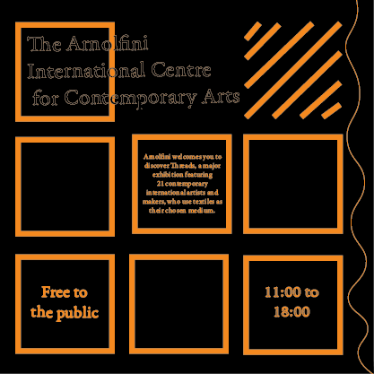
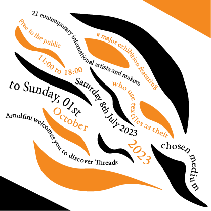
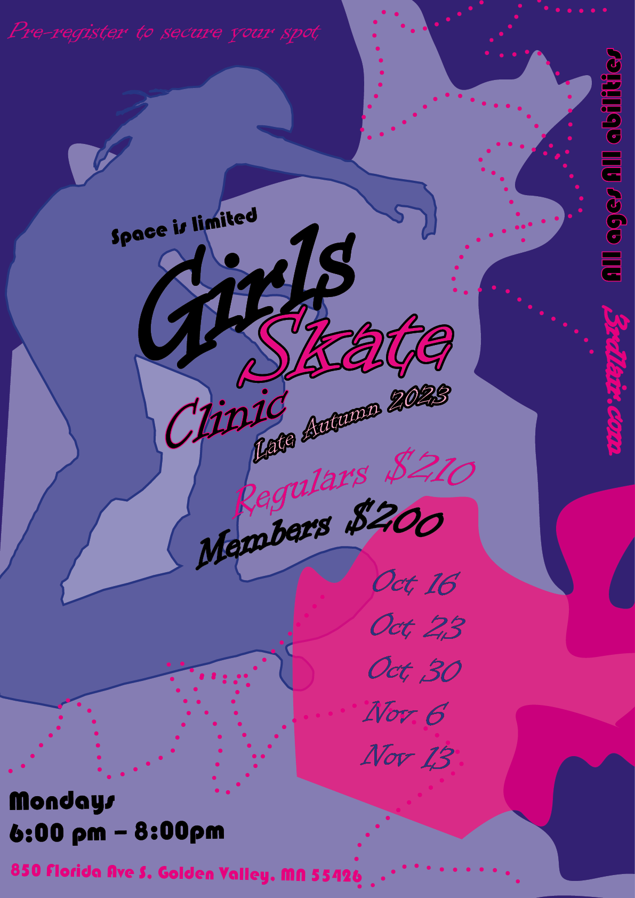
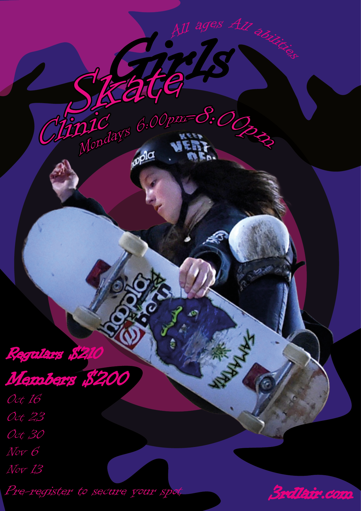

Typographic Project
Every element is arranged along a single axis, either on its left or right. The information is presented separately to attract the viewer's attention and boost its appeal.

Every element in the radial system is arranged to radiate like rays from a central point of emphasis.

Every element in a dilational typographic system grows in a circular pattern from a central point. Random system components don't seem to follow any particular pattern.

The elements are arranged freely by the random system, they have no clear goal, direction or pattern.

The grids are effective on books,posters, websites and many more. a grid is a set of invisible lines, either vertical or horizontal; that divide a page into pieces. There are rarely any problems with readbility of grid text.

An alphabet made up of a restricted set of forms, or modules ,is called a modular typerface.
Lacks edge alignments and axis relationships, allowing the pieces to move freely.It works well for creating posters and book covers.
A collection of standardised units that are non-objective. every word is positioned symmetrically along one axis.

CARP
Poster 1
I have created three different posters about the Skateboarding by using the Adobe Indesign. In each one of my work my intention was to present in the clear and presentable way the theme of posters and what story they are telling for the target audience.
The first poster which I have created is my the least favourite one, that is because it looks simple. Before starting the university I have never had a chance to use the Adobe Indesign program. Because of that we can notice a lot of empty spaces around the character. Also after creating the rest two posters I have realised that some information written on the first poster are hard to read neither because of the size or colour. Thanks to creating the first poster I had a chance to gain a knowledge about using the Indesign program and to experiment with some options (little dots around the character) which I have used for the rest of my posters. Furthermore the most noticeable thing which person can notice is that instead of using a basic picture of a girl skateboarding ,I have decided to by using a pen only present her movements. Thanks to this idea the poster might look more standing out, and the main picture( of skateboarding girl) is matching more nicely with the rest of the poster when it comes about the colour scheme .
Poster 2
For creating the second poster I have decided to go for something compeletely different comparing to my first work. This time I have decided to use the actual picture of a girl skating (we can see her face), the only thing which I changed in it was cutting off the background. Also I wanted to experiment with changing the shapes of text to make it even more eye-catching for the target audience. The most challenging thing which I had a chance to experience while making it was cutting off the background from a picture with a girl. That is because the function of dong it works completely different comparing to the Adobe Illustrator.
Poster 3
paragraph
Upgrading The Chosen Poster
Coding Project
This is section 3 content.